Tofu-less Scrambled “Eggs”

The idea of creating an “eggless,” tofu-less, scrambled eggs has been high on my bucket-food-list. Well, I finally got around experimenting, and it turned out just like I imagined. Tasted like scrambled eggs, had the texture of scrambled eggs and visually… well, you be the judge of that. :)
If you are new to my “egg” creations, I will briefly share the ingredients that I used in order to create this dish. The key ingredient is agar powder, it is made from seaweed, and it is not a raw product.
It does have some great health benefits which you can read about (here). Without the agar, this dish wouldn’t have… well, it just wouldn’t exist. I created this recipe for those who miss having eggs in their morning breakfast routine.
For the eggy taste, I used the black salt; you will find a link below. This ingredient is a must-have because of its high sulfur content which gives the “eggs” that eggy taste.
For the yellow color, I used turmeric which is a wonderful healing spice for inflammation. In order for the body to absorb the nutrients of turmeric it must be accompanied with black pepper… so be sure to crack some on top of your “eggs” when serving. At first, the color will seem very pale but trust me; it brightens up in color as it solidifies.
The thought of dealing with agar can seem very overwhelming for people… I know it did for me, but that was just because it was something new that I didn’t know a thing about. Do know this, the dish goes together fairly quickly, and I found it just as easy to make as real scrambled eggs.
These scrambled “eggs” would be great tossed with “grilled” veggies or maybe with some cooked kidney or black beans.
Ingredients:
Yields 2 cups scrambled eggs
Preparation:
- Place the water, agar, salt, and turmeric in a small saucepan. Turn the heat on medium-high and whisk until it starts to bubble. Reduce the heat to medium and continue to whisk for 4 minutes. We need to make sure the agar dissolves.
- Remove from the heat and stir in the almond milk. Move quickly because the agar will start to gel if left to cool t0o long.
- Pour the mixture into a fry pan or baking pan. Place in the fridge for 2 minutes. No need to oil the pan.
- Remove from the fridge and with a spatula, scrape along the bottom of the pan as though you were scrambling eggs. Return to the fridge for 2 minutes, remove and keep scrapping. Repeat this process about 4-6x or until it starts to hold shape, resembling scrambling eggs.
- Eat right away or store in the fridge for 1-2 days. You can warm this dish in the dehydrator if you wish.
Below, you will see two sets of photos from two different times
that I made them. The natural sunlight really changes the look
of the color.
Here we are, at the stove. I know, strange place to be. Normally I am in front of my
food processor or blender. But none the less, let’s get rolling here.
After the mixture is done pour it into a fry pan or baking dish. I thought it was rather
funny to use the frying pan… but then I am easily entertained. :)
Place the pan in the fridge for 2 minutes, remove and give the bottom of the pan a scrape.
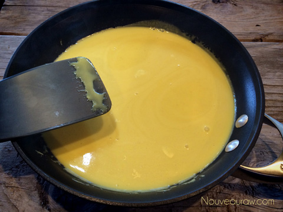
Back in the fridge for another 2 minutes, remove and scrape.
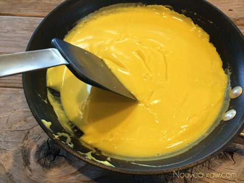
You will notice that the mixture is starting to thicken up some. The scraping along the
bottom of the pan will start to create it in looking like scrambled eggs. Trust me.
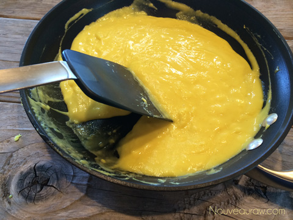
Yep, you guessed it… back in the fridge….remove and scrape.
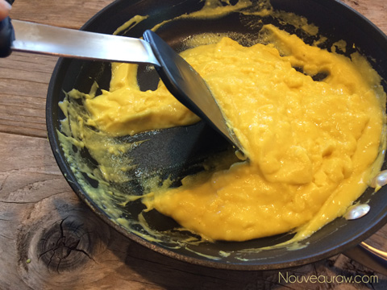
It is getting close to being done at this point. But for good measure let’s try putting
it back in the fridge for another few minute
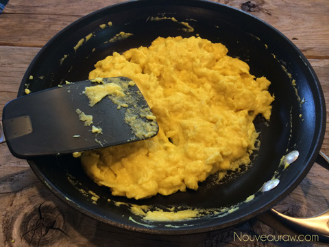
There we go.. looking pretty much spot on.
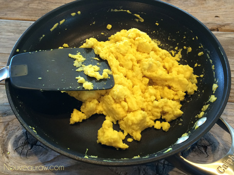
Add a little salt and pepper… perfecto’!
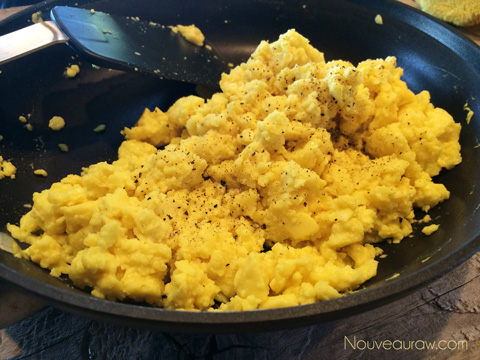
Do to some home-chefs having some mixed results, I made the
“egg” again, and they turned out great. Sorry for the photo color
differences. Goes to show you how fickle photography can be with
natural light. :) So the photo below is right after I poured the mixture
in the pan. I then slide it into the fridge for 2 minutes.
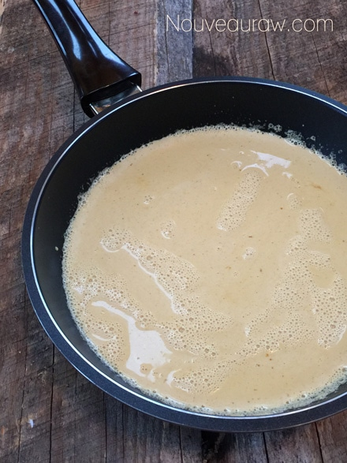
2 minutes later, I removed the pan to push the mixture around..
you can see perhaps… that it is getting thicker.
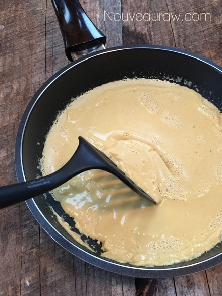
Here is another shot showing you the chunks that are starting to form.
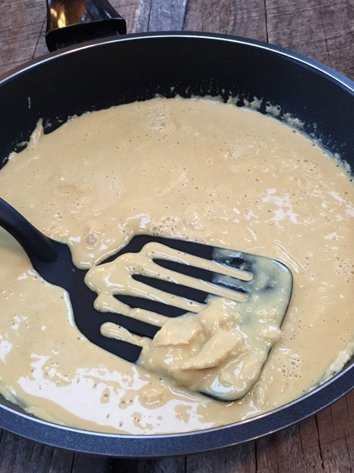
By the end of 6 minutes, the “eggs” were done. At this point, they
are a bit chilled. You can GENTLY warm it on the stove, just to
finger warmth. They will start to melt if the heat gets too warm.
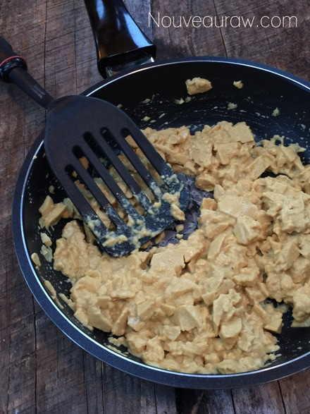
© AmieSue.com